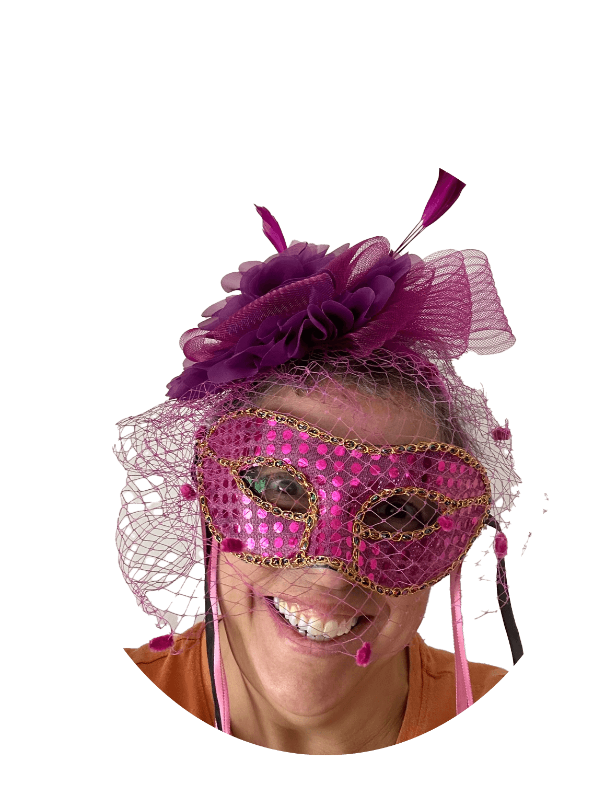

Distributor of Tricks and Treats
Shari Marie King

Contact:
- sking@ salemwitchproj.gov;
- Mockingbird Lane;
- Transylvania, Romania 06660;
- 606-666-DEAD(3323)
Educational Background
- School of Hard Knocks 1970-?;
- Whats Amatter U 2001-?;
- Hogwarts Alumni 1997-2007
Affiliations:
- Salem Witch Project;
- Wiccan Chapter #79;
- Munster Support Group
/ul>
Work History
Halloween Horror Houses presented by Windsor Chamber of Commerce:
- Collaborated and designed a dental office out of a bathroom
- A costumed actor dressed as a bloodied dentist would rev a drill at visitors passing by. A second actor festooned in bloody drool would howl in pain. 2003;
- Created a morgue inside an office space. The morgue appeared as a wall of labeled drawers.
Costumed (dead) actors were encouraged to lie in the open drawers to frighten visitors as they passed through the room. 2004;
- Created a Freak Show. Developed and costumed several acts that included Swamp Thing, Mole boy, and Pumpkin Head;
The costumed characters performed on top of desks partitioned off with theatrical curtains
A barker led visitors to the different stages to be entertained with frolicking freakdom. 2005